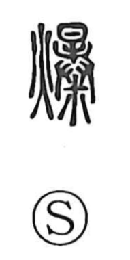

爆

Kun: hazeru | On: baku
to explode ・ to burst ・ explosion
Explanation
爆 combines 火, fire, with the sound element 暴. 暴 pictures an animal’s carcass exposed to the sun, drying until it splits and comes apart. The image carries the force of something breaking into scattered pieces.
With 火, the cause is intense heat: something is scorched until it bursts, cracks, or flies apart. The word also evokes the sharp report of the bursting, giving the modern sense ‘explode.’
This noise had a ritual use. 爆竹, bamboo made to burst in the fire, was sounded to drive harmful spirits away. The protective force lay in the loud cracking itself, joining the physical burst to the expulsion of an unwelcome presence.